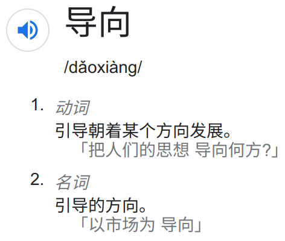

有用的，但实际上去的人也不是那么多吧，毕竟课程压力大
不过请来的有的老师，也emmm，可能只是不对我胃口吧
学生也喜欢搞鄙视链，这是我不理解的
实际上，比较强的那部分，或者说看清了自己要干啥的那部分，已经把这些利用起来了的
我们不应该更去关注那部分还在迷茫的同学吗，不是更应该关注需要帮助的同学吗
本科教育不是选拔性的欸，也是教书、育人，应该至少让每个人都有感受到的机会吧

有用的，但实际上去的人也不是那么多吧，毕竟课程压力大
不过请来的有的老师，也emmm，可能只是不对我胃口吧
学生也喜欢搞鄙视链，这是我不理解的
实际上，比较强的那部分，或者说看清了自己要干啥的那部分，已经把这些利用起来了的
我们不应该更去关注那部分还在迷茫的同学吗，不是更应该关注需要帮助的同学吗
本科教育不是选拔性的欸，也是教书、育人，应该至少让每个人都有感受到的机会吧
所以啊，但是压力对于所有人来说都是一样的，大家要修读的课程学分也是一样的。能力强的人可能想着利用资源来拓展自己，不能说学校没有给到一般同学利用这些资源的机会
船院也有不少午餐会。我上个学期就去过几场。
上学期考研期间因为时间不合适退掉的一门《中国当代社会问题》一课的老师第一节课也强调，交大没有或很少有高工资和行业顶尖，但平均水平不低，大部分源于人文社科的不成体系。
这句话我感同身受，理工科的利益思维，让这个校园变得走到哪里都是先论GPA，举个例子，《职业生涯规划》这门课，我可以说只有吴海燕老师讲的是真正有用的，但是我之前看到推荐课慎选海燕姐，原来是给分不全是九十多，不够高。可能是我从大一下就已经没了保研路，选课看喜好而不是看给分，但让我选选修课，研究生期间我也会选自己喜欢的而非给分高的，非自我标榜，而是感觉真正这么做的不是多数。
以及绿格的两余年，我也看到了，奔赴山河的那些人，去绿格的是少数，但大多数都是有趣的灵魂，也很多专业的翘楚，各方面都很优秀的人，在这期间我对朋友的要求也越来越严苛，因为我发现很多人其实都不具备这样灵动的心，我是难和利欲熏心的人好好相处的，以及在定义一个人是否纯粹的时候，纯朴本真这些，其实是优秀与否的一个重要衡量因素。
优秀的人不只是专业方面分数方面成绩方面优秀。更重要的是，有一颗不只问对错的心，绿格有直接收益么？我觉得可能是没有的，但正是这种没有直接获利的事情，对人的影响才是最深远的，这也是第三年还想去绿格，但是受疫情影响遗憾的原因。明年还会去，种树不是目的，目的是结实愿意花一些时间放空自己去做这些“没有意义的事情”的一群人，他们往往是真正优秀的一群人，也是最有创造力的一群人（别挂我，别说我过度吹捧绿格 ，只是心中所想，说了出来）
，只是心中所想，说了出来）
去年考研前期院系学代会也在反馈学生综合素质培养的问题，为什么优秀的高考生进入了中国顶尖大学或者说进入了交大，四年之后变得麻木，变得唯利是图，变得没有创造力，变得平庸？我想，和文科有关系，和教育体制也有关系。
反转了，这是对工科平台学生的资源倾斜 
工科平台的学生们，你们拥有了试点班学生梦寐以求的权利——必修工导大化理力的权利
不过认真来说，我觉得尽量缩小必修课的数量，将所谓的「通识教育」「学科交叉」都以限选课的形式来设定要求，可能更加合理一些。
我只对这一点分享一下理工科学生的感受。我觉得在中国在我的专业的大部分学生，不把老板称作老板而称为老师才是自欺欺人的行为，骗你你自己和他是同一阶层的。事实上老板拥有处理研究生的无穷权力，而研究生所拥有的反抗能力微不足道。我见过在一年级二年级的时候和老板亲密无间给老板免费打工，到了自己要毕业的时候老板翻脸不认人的学生。所以，给这一阶级正确的称呼，才是唤醒学生的正确方式。我个人觉得老师可能太理想化了（也有可能是我太naïve了）。但是还是感谢老师愿意花时间来思考这些问题。
就像某些人自称“公仆”一样。
说缺乏人文环境我是不认可的。我对于乐理的入门，到对音乐有一定的鉴赏，全部都是在本科时学会的。从只会刷题到形成自己的人生观与方法论也是在本科阶段。
我能这么做，纯粹是我闲，我从没考虑过工作怎么找，也没想过该不该保研，我专业课能逃全逃了，全都是拿着低保过的。什么课感兴趣我选啥课，我本科4年和夏季学期加一起选了50多分选修课。但一般人也没法像我这样对生活傻傻地不做规划。
从我的视角来说，时间+宽松的上升途径+多样的选择才是最重要的。
我一边爱着人文社科一边利欲熏心  是不是没救了
是不是没救了 


这就偏离了我们讨论的资源分配问题了。你要说更应该关注迷茫的同学我也认同，可是学生这么多，哪些是更应该关注的？思政辅导员之类的也只能够关注到学弱的同学（提供学业辅导，配对学业辅导员也是很好的措施），但是一般同学，不上不下的话确实很难说谁需要关注呀
大一的时候，跟风念着“你们还是too young，明白我的意思吧，我告诉你们我是身经百战了，见的多了，诶，西方哪一个国家我没有去过”，并不理解其中含义
大半个10年过去，西方国家去了一半，发现学长的话，真的有普适性
盲目追求gpa/高薪/名校offer的学生，也就是搞大新闻的香港记者：只要能搞出大新闻（高绩），报道的是不是真相（学没学到东西），又有什么关系呢
“我也替你们捉急啊”
有没有一种可能，你的行为不属于学校的「导向」，只能说你利用好了学校在人文方面提供的课程资源 

确实有点歪了
我觉得通识教育的目的在于关注所有人
而资源确实是需要去争取的
文科专业来了……我交鄙视链底端生物爬来回复一下
这边法学，就是老师说的那个交大所谓的唯一有完整体系的文科学院
我院的宏观发展怎么样？这些都暂且按下不提
所谓中小微院，入学时招了50来个人，现在一个年级70来个人，据说只有10个出头的保研名额……【人尽皆知的小道消息】
在院里什么感觉……非常卷且累……（这种累和理工科的学业难度还不太一样，主要来自于僧多肉少导致/资源紧缺下的分分必争）
去参加高年级的活动，与高年级学长学姐们进行交流，重修刷分几乎是每个人的必备技能，对前途的担忧从大三弥散大二再到大一
我院的教授们还是非常好的，上课质量相对不错（和其他专业说的除了给分高一无是处相比），有所参差但综合水平很好
但这个jwc啊…………是全校jwc的通病吗……
总而言之，为什么我交给文科专业的保研名额这么离谱啊…………虽然文科专业确实水平不太行，但这群学生也是各省市掐尖上来的……真要这么厮杀嘛……
【情绪化产物，看看就好，不妥立删】
【在我交时间短，观点主观片面，不代表我院其他学生】
用词不当了，我改一下。
对啊，学生这么多，资源本来就有限，就是需要去争取呀。难道还会存在说老师跑过来问你需不需要帮助？就算在高中，那也是你有什么不会了请教老师，老师好帮助你呀，不能说你不吱声让老师猜你需不需要他的帮助吧。
我的我的，我的问题（
热知识，你交文科学生大部分都不是掐尖掐上来的，扒扒高考分数一目了然
据我所知，文科专业大多数都是各种专项计划，三位一体，综合评价来的，要不就是各种调剂
上面不包括安泰，虽然安泰也偏文，到安泰自认为自己是理科 
别问我是怎么知道的，问就是………
工科很多导师把学生当做干项目的廉价劳动力，整天画大饼，还美其名曰培养科研能力，叫声老板已经很客气了
其实我也不理解为什么非要叫老板，明明是师生关系，叫一声老板好像是上下级关系一样
教务处的nt排课和奇葩培养计划是导致学生上课不积极，爱选水课的罪魁祸首。特别是培养计划，弹性极低不说，还要学一些和专业根本没啥关系的课。本科是这样，现在读研了发现研究生培养计划比本科还烂，实在是无语